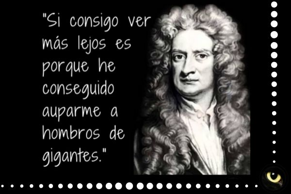
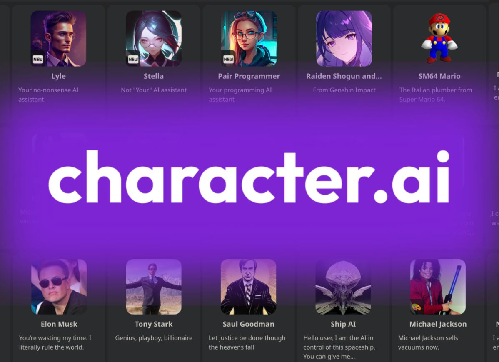

Volver
Ideas centrales (IA y formación)
-- IA --
- ChatGPT - LLM - character.ai
- Steve Jobs - Bicicletas para la mente


-- Formación --
- Aprendizaje por Observación (Videotutoriales)
- Aprendizaje Haciendo (Learn by doing)
- Santiago Bilinkis - Antes no podía y ahora puedo